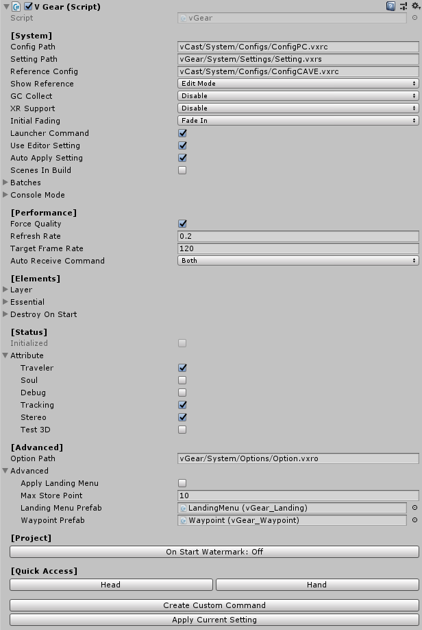
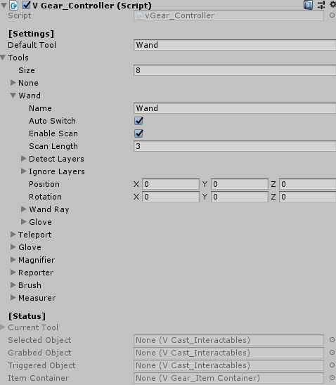
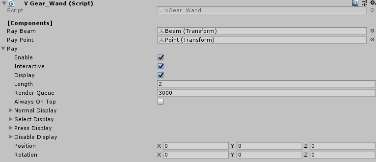
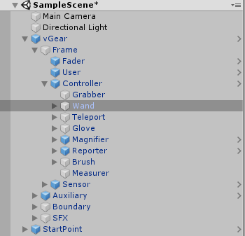
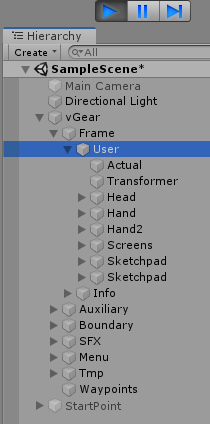

Detail of VGear Components
Here will introduce the setting of components of the vGear prefab and its child.
Click the gameobject
vGearin the Hierarchy window, componentV Gear (Script)is shown at the inspector window, which manage the setting of the vGear system.[System] Config Path The path of reading the system config in Unity Engine Editor. Setting Path The path of reading the system settings in Unity Engine Editor. Reference Config The path of config read for screen reference.
The screen reference is useful for attaching gameobjects in the screens.Show Reference Select the mode to show the screen gameobject reference. XR Support Enable to support OpenVR,
"Standard Mode" for HTC Vive and "Role Mode" for SteamVR Role Mode.[Performance] Force Quality Enable to set the quality settings by setting file. Refresh Rate The refresh rate for the function that no need to update each frame. Target Frame Rate Target Frame Per Seconds.
Recommended 120 for VotanicXR SDK physics.[Status] Traveler Enable Traveler for user navigation by controller.
Usually disable during scene transition or playing animation.Soul Enable Soul for ignoring user free falling and wall collisions.
Usually disable during flying or looking around the scene.Debug Enable Debug for custom uses and showing debug message. Tracking Enable Tracking for tracing trackers. 
The setting of generated batch files can be set on
[System] > Batchesin V Gear Component.Go to
vGear > Frame > Controller, component V Gear_Controller (Script) is shown at the inspector window, which manages the setting of controller. API provided functions to get/set the controller gameobject and settings.[Settings] Default Tool The name of default tool of controller.
Note that the tool name should be the same as the Tools below.Tools Tools list of controller, the expansion stores the setting to change between tools.
This component control the common settings for all tools.
There will be different settings for each tool, will be introduced below.Auto Switch When current tool is this tool,
all the tools which apply Enable Scan will scan objects and auto switch to the first detected tool.Enable Scan When current tool applies Auto Switch,
scan objects and determine this tool should be switched on or not.Scan length Tool detection scan distance. Detect Layers The layer related to this tool for scanning. Ignore Layers The layer ignored to this tool for scanning [Status] Current Tool The current tool of controller. Select Object The interactables currently selecting. Grabbed Object The interactables currently grabbing. Triggered Object The interactables currently triggering. 
Go to
vGear > Frame > Controller > Wand, component V Gear_Wand (Script) is shown at the inspector window, which manages the setting of the wand tool.Wand is the basic tool to interact the gameobjects with Interactables that will be described in chapter
Interactables. API provided functions to get/set the wand gameobject and settings.[Components] RayBeam The transform of the Beam gameobject. Ray Point The transform of the Point gameobject. Ray Stored the settings of the ray, such as color, length. Enable Enable the wand ray. Interactive Set wand ray is interactive or not. Display Enable to display the wand ray. Length The length of the wand ray. Normal Display
Select Display
Press Display
Disable Display
WandRayDisplay structure.
Structure to save different Display detail for different states.
The field included a color and an onTopAlpha.
Go to
vGear > Frame > User, component V Gear_User (Script) is shown at the inspector window, which manages the setting of the user. API provided functions to get the gameobject and settings.During play mode, it will instantiate corresponding gameobjects based on config reads, such as head and hands.
Note that the Controller gameobject will become the child gameobject of the Hand.
Editor Mode Play Mode  